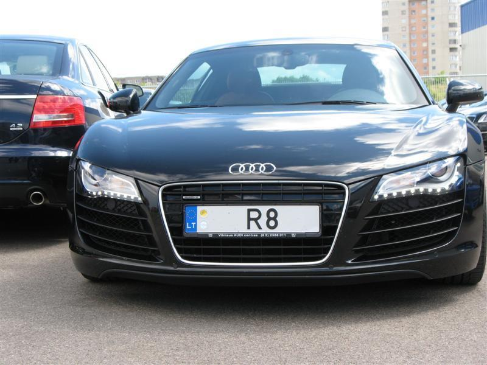

Automobilių lizingas | SEB bankas
 Skip to main content Switch to mobile version. Į viršų
Meniu
Prisijungti prie interneto banko
Privatiems klientams
Interneto bankas Privatiems Verslui Interneto bankas English Privatiems Verslui Privačioji bankininkystė Didelėms įmonėms Infobankas Apie SEB Karjera Pradžios tinklalapis Tapti klientu Klientų programos Moksleiviams Jaunimui Senjorams Darbo užmokestis Vaizdo konsultacija „Bankas namuose“ Kasdienė bankininkystėMokėjimo kortelės
Debeto kortelės Kredito kortelės Bekontaktės kortelės Bekontakčiai atsiskaitymai telefonu Kelionės užsienyje draudimas Prevencinė mokėjimo kortelių apsauga Kortelių siuntimas paštu Aptarnavimo pirmumo paslauga banko skyriuose Kaip saugiai internetu atsiskaityti kortele? Automatinio valiutos keitimo tvarka atsiskaitant korteleBanko sąskaita ir pervedimai
Banko sąskaita Pinigų pervedimas banko viduje Europinis pinigų pervedimas Tarptautinis pinigų pervedimas Periodinis pervedimas Įmokos ir mokesčiai Elektroninė sąskaita (e. sąskaita) SEPA tiesioginis debetasSEB paslaugų planai
SUMANU SUMANU PLIUS SENJORAS JAUNIMAS MOKSLEIVIS STANDARTASKita
Grynųjų pinigų išmokėjimas Grynųjų pinigų įmokėjimas Įkainiai El. bankininkystėPaslaugos internetu
Interneto bankas Mobilioji programėlė Prisijungimo priemonės „Finansų planuotojas“ Investavimo paslaugos internetu Elektroninių dokumentų pasirašymo portalas Virtualus konsultantasKita
Paslaugos telefonu Banko pranešimai SMS žinutėmis Kaip saugiai naudotis banko paslaugomis? Atviroji bankininkystė Kreditai ir lizingasKreditai
Pasirinkite, kokiam tikslui Jums reikia paskolos Būsto kreditas Kreditas įkeičiant turtą Vartojimo kreditas Saugaus skolinimosi priemonės Valstybės iš dalies kompensuojamas būsto kreditas Būsto kreditas pirmajam būstui įsigyti su valstybės finansine paskataLizingas
Automobilių lizingas Žaliasis lizingas Taupymas ir investavimasTaupymas ir investavimas
Naujos taupymo galimybės Indėliai Obligacijos LR Vyriausybės taupymo lakštai Struktūrinės investavimo priemonės Investiciniai fondai Fondai, kurių vienetais prekiaujama biržoje Akcijos Periodinis taupymas ir investavimas PensijaPensijos kaupimas ir išmokėjimas
I pensijų pakopa II pensijų pakopa III pensijų pakopa DraudimasDraudimas
Asmens draudimas „Aprūpinta senatvė“ „Vaiko ateičiai“ „Saugus kreditas“ Būsto draudimas Pradinis puslapis Privatiems Kreditai ir lizingas Lizingas Automobilių lizingasAutomobilių lizingas
Pagrindines finansavimo sąlygas pasirinksite atsižvelgdami į galimybes
Padėsime Jums sutvarkyti automobiliui įsigyti reikalingus dokumentus
Paraišką galėsite pateikti internetu arba automobilių pardavimo salone
Pagrindines finansavimo sąlygas pasirinksite atsižvelgdami į galimybes
Padėsime Jums sutvarkyti automobiliui įsigyti reikalingus dokumentus
Paraišką galėsite pateikti internetu arba automobilių pardavimo salone
Norite pildyti paraišką?
Pildykite Esate klientas Nesate klientas ir naudojatės sertifikuota prisijungimo priemoneSertifikuota prisijungimo priemone laikoma mobilusis parašas arba „Smart-ID“ su aktyvuota kvalifikuoto elektroninio parašo funkcija. Sužinokite daugiau
Pirmiausia norite pasitarti?
Registruokitės į konsultacijąAutomobilio lizingo paslauga galite pasinaudoti pirkdami ir naują, ir naudotą automobilį. Pradinės lizingo įmokos dydį, lizingo laikotarpį, periodinio įmokų mokėjimo būdą galėsite pasirinkti patys. Jei parduodate savo automobilį, jo pirkėjas taip pat gali pasinaudoti automobilių lizingo paslauga.
Skaičiuoklė Sąlygos Įkainiai Draudimas Turto naudojimo sąlygos Kur ir kaip kreiptis?
Skaičiuoklės rezultatas yra tik apytikslis. SEB bankas neįsipareigoja suteikti apskaičiuotos vertės lizingą.
Bendros kredito kainos metinės normos apskaičiavimo pavyzdys
Jei lizingu įsigytumėte 20000 Eur vertės automobilį ir automobilio pardavėjui sumokėtumėte 4000 Eur pradinę įmoką nuosavomis lėšomis, tai bendra vartojimo kredito suma būtų 17005,73 Eur. Bendra vartojimo kredito kaina (apskaičiuota įtraukus per lizingo laikotarpį mokėtinas lizingo palūkanas, lizingo sutarties mokestį ir sąskaitos tvarkymo mokestį) būtų 1005,73 Eur, darant prielaidą, kad lizingo sutarties terminas – 5 metai, valiuta – eurai, kintamųjų palūkanų norma – 1,85 proc. (1,85 proc. marža ir 6 mėn. EURIBOR). Bendros vartojimo kredito kainos metinė norma būtų 2,48 procento, mėnesio įmoka – 279,40 Eur.
Grąžinimo terminas nuo 6 iki 84 mėn.
Pagrindiniai reikalavimai
Automobiliui Pirkėjui Galite įsigyti M 1 * ar N 1 ** kategorijos (pagal galiojančią ES klasifikaciją) transporto priemonę: didžiausioji leidžiamoji automobilio masė turi būti ne didesnė kaip 3 500 kg automobilis gali turėti ne daugiau kaip aštuonias sėdimas vietas keleiviams ir vieną sėdimą vietą vairuotojui* Įsigyjamas automobilis negali būti naudojamas gauti pelnui iš nuomos, krovinių gabenimo, keleivių vežimo, mokymo vairuoti ir panašios veiklos.
** Įsigyjamas automobilis yra skirtas naudoti siekiant gauti pelno iš nuomos, krovinių gabenimo, keleivių vežimo, mokymo vairuoti ir panašios veiklos.
Lizingo būdu automobilį gali įsigyti bet kuris Lietuvos Respublikos pilietis arba asmuo, turintis leidimą gyventi Lietuvoje visą lizingo sutarties laikotarpį, jeigu: jis ne jaunesnis kaip 18 metų gauna nuolatines pajamas bendra mėnesio įmokų, jo mokamų įvairioms kredito įstaigoms, suma neviršija 40 proc. per mėnesį gaunamų pajamų (vadovaujamasi Lietuvos banko Atsakingojo skolinimosi nuostatais)Finansavimo būdai
Pasirinktą automobilį galite įsigyti sudarydami lizingo (išperkamosios nuomos) sutartį . Pagal šią sutartį gali būti mokama dvejopai :
mokėjimas gali būti išskaidomas lygiomis dalimis ir išdėstomas per visą lizingo laikotarpį didesnės nustatytos automobilio kainos dalies (likutinės vertės) mokėjimas gali būti atidedamas — ši dalis sumokama su paskutine lizingo įmoka, o visą laikotarpį mokamos mažos eilinės įmokos ir palūkanos, skaičiuojamos nuo nesumokėtos automobilio kainos daliesPavyzdys
Pagrindinės sutarties sąlygos Finansinis lizingas Finansinis lizingas, kai atidedamas likutinės vertės mokėjimas Automobilio kaina su PVM 15 000 Eur 15 000 Eur Pradinė įmoka (20 proc.) 3000 Eur 3000 Eur Likutinė automobilio vertė 0 proc. 20 proc.* Metų palūkanos 3,5 + 6 mėn. EURIBOR 3,5 + 6 mėn. EURIBOR Sutarties parengimo ir administravimo mokestis 200 Eur 200 Eur Lizingo sutarties laikotarpis 5 metai 5 metai Mėnesio įmoka 218,30 Eur 172,48 Eur** Likutinė vertė yra mokama kartu su paskutine lizingo įmoka. Gali būti pratęsta lizingo sutartis.
Čia pateiktas tik pavyzdys. AB SEB bankas neįsipareigoja finansuoti šiomis sąlygomis.
Įprastos lizingo sutarties sąlygos
Jei įsigyjamas naujas automobilis Jei įsigyjamas naudotas automobilis* Lizingo laikotarpis iki 7 metų. Lizingo laikotarpio pabaigoje automobilis negali būti senesnis kaip 13 metų. Mažiausia turto kaina – nuo 8 000 Eur Pradinė įmoka nuo 10 proc. automobilio kainos. Vienkartinį sutarties parengimo ir administravimo mokestį bei palūkanas nustatome įvertinę Jūsų mokumą. Lizingo būdu įsigyjamą automobilį privalote apdrausti transporto priemonių (kasko) draudimu AB SEB bankui priimtinoje draudimo bendrovėje . Pasirinkite lizingo ir draudimo paslaugą , ir automobilio draudimu pasirūpinsime mes ir draudimo bendrovė. Taip sutaupysite pinigų ir laiko.* Finansuojame SEB partnerių parduodamus automobilius . Naudotas automobilis turi būti techniškai tvarkingas ir atitikti natūralaus turto nusidėvėjimo reikalavimus .
Bendros lizingo kainos metinės normos apskaičiavimo pavyzdys
Jei lizingu įsigytumėte 20000 Eur vertės automobilį ir automobilio pardavėjui sumokėtumėte 4000 Eur pradinę įmoką nuosavomis lėšomis, tai bendra vartojimo kredito suma būtų 17152,8 Eur. Bendra vartojimo kredito kaina (apskaičiuota įtraukus per lizingo laikotarpį mokėtinas lizingo palūkanas, administravimo mokestį ir sąskaitos tvarkymo mokestį) būtų 1152,8 Eur, darant prielaidą, kad lizingo sutarties terminas – 5 metai, valiuta – eurai, kintamųjų palūkanų norma – 2,2 proc. (2,2 proc. marža ir 6 mėn. EURIBOR). Bendros vartojimo kredito kainos metinė norma būtų 2,85 procento, mėnesio įmoka – 281,85 Eur.
Išsamesnės informacijos apie lizingą ir su juo susijusias paslaugas, taikomas sąlygas ar įkainius teiraukitės paskambinę telefonu +370 5 268 2800 arba atvykę į pageidaujamą SEB banko skyrių .
Rekomenduojame prieš sudarant bet kokią finansinių paslaugų sutartį atidžiai išnagrinėti paslaugų teikimo sąlygas ir, jei reikia, pasikonsultuoti su banko darbuotojais.
Atkreipiame Jūsų dėmesį, kad bendra mėnesio įmokų, Jūsų mokamų įvairioms kredito įstaigoms, suma neturėtų viršyti 40 proc. per mėnesį Jūsų gaunamų pajamų. Netinkamai vykdydami prisiimtus finansinius įsipareigojimus, didinate finansavimo paslaugų, kuriomis naudojatės, išlaidas ir galite padaryti neigiamą įtaką savo kredito istorijai. Jei Jūsų finansavimo sutartis nutraukiama dėl to, kad esate pažeidę jos sąlygas, galite prarasti ne tik jau sumokėtas įmokas, bet ir teisę į lizingo būdu arba kredito lėšomis įsigyjamą turtą.
Lizingo sutarties administravimo ir sąlygų keitimo mokesčiai Lizingo sutarties mokestis pildant paraišką internetu – 1 proc. turto vertės, bet ne mažiau kaip 200 Eurpildant paraišką banko skyriuje – 1 proc. turto vertės, bet ne mažiau kaip 250 Eur Papildomas mokestis už sutarčių (lizingo, pirkimo-pardavimo, atpirkimo ir pan.) parengimą anglų kalba 150 Eur Skolos perkėlimo sutarties / lizingo sutarties termino keitimo mokestis 1 proc. neišmokėtos turto vertės, bet ne mažiau kaip 200 Eur Sutarties arba mokėjimo grafiko keitimo mokestis kliento iniciatyva (išskyrus termino keitimą) arba sutarties galiojimo atnaujinimas 100 Eur Įmokų mokėjimo dienos pakeitimas 30 Eur Sutarties nutraukimo ir turto pardavimo mokesčiai Už anksčiau nutraukiamą sutartį 100 Eur Turto pardavimas trečiajai šaliai Lietuvoje 1,5 proc. likutinės vertės,
bet ne mažiau kaip 300 Eur Turto pardavimas trečiajai šaliai ne Lietuvoje arba turto pardavimas visiško sugadinimo atveju 1,5 proc. likutinės vertės,
bet ne mažiau kaip 500 Eur Pažymų išdavimo ir kt. mokesčiai Papildomų dokumentų (subnuomos, nuomos, panaudos ir kt. sutikimų, raštų, įgaliojimų, pažymų, pažymėjimų, dokumentų kopijų, metų apyvartų ataskaitų ir pan.) parengimas arba pakartotinis anksčiau parengtų dokumentų išdavimas kliento prašymu 20 Eur PVM sąskaitų faktūtų siuntimas paštu 3 Eur Administracinių nuobaudų dokumentų ar kitų kliento vardu gautų dokumentų administravimas 10 Eur už kiekvieną gautą dokumentą Tarptautinio pinigų pervedimo mokesčiai, jei už kliento turtą mokama į užsienį, užsienio valiuta į kitą banką Lietuvoje, pagal skubų mokėjimo nurodymą Nekilnojamojo turto mokestis Garantijos mokesčiai Hipotekos mokesčiai (taip pat įkeičiant automobilį) Greitojo pašto (pvz., „DHL Lietuva“)
kompensuoja klientas
Išsamesnės informacijos apie lizingą ir su juo susijusias paslaugas, taikomas sąlygas ar įkainius teiraukitės paskambinę telefonu +370 5 268 2800 arba atvykę į pageidaujamą SEB banko skyrių .
Rekomenduojame prieš sudarant bet kokią finansinių paslaugų sutartį atidžiai išnagrinėti paslaugų teikimo sąlygas ir, jei reikia, pasikonsultuoti su banko darbuotojais.
Atkreipiame Jūsų dėmesį, kad bendra mėnesio įmokų, Jūsų mokamų įvairioms kredito įstaigoms, suma neturėtų viršyti 40 proc. per mėnesį Jūsų gaunamų pajamų. Netinkamai vykdydami prisiimtus finansinius įsipareigojimus, didinate finansavimo paslaugų, kuriomis naudojatės, išlaidas ir galite padaryti neigiamą įtaką savo kredito istorijai. Jei Jūsų finansavimo sutartis nutraukiama dėl to, kad esate pažeidę jos sąlygas, galite prarasti ne tik jau sumokėtas įmokas, bet ir teisę į lizingo būdu arba kredito lėšomis įsigyjamą turtą.
Lizingo būdu įsigyjamą automobilį privalote apdrausti transporto priemonių (kasko) draudimu SEB bankui priimtinoje draudimo bendrovėje .
Turto draudimo reikalavimai
Draudimo suma negali būti mažesnė už transporto priemonės rinkos vertę. Išskaita (nuostolio dalis, kurios neatlygina draudimo bendrovė) vagystės atveju yra ne daugiau nei 20 proc. nuostolio, besąlyginė išskaita – ne daugiau kaip 868,86 Eur. Naudos gavėjas yra AB SEB bankas. Standartinės transporto priemonių (kasko) draudimo sutarties sąlygos.Siūlome pasirinkti lizingo ir draudimo paslaugą — sutaupysite pinigų ir laiko, nes draudimu už Jus pasirūpinsime mes ir draudimo bendrovė.
Išsamesnės informacijos apie lizingą ir su juo susijusias paslaugas, taikomas sąlygas ar įkainius teiraukitės paskambinę telefonu +370 5 268 2800 arba atvykę į pageidaujamą SEB banko skyrių .
Rekomenduojame prieš sudarant bet kokią finansinių paslaugų sutartį atidžiai išnagrinėti paslaugų teikimo sąlygas ir, jei reikia, pasikonsultuoti su banko darbuotojais.
Atkreipiame Jūsų dėmesį, kad bendra mėnesio įmokų, Jūsų mokamų įvairioms kredito įstaigoms, suma neturėtų viršyti 40 proc. per mėnesį Jūsų gaunamų pajamų. Netinkamai vykdydami prisiimtus finansinius įsipareigojimus, didinate finansavimo paslaugų, kuriomis naudojatės, išlaidas ir galite padaryti neigiamą įtaką savo kredito istorijai. Jei Jūsų finansavimo sutartis nutraukiama dėl to, kad esate pažeidę jos sąlygas, galite prarasti ne tik jau sumokėtas įmokas, bet ir teisę į lizingo būdu arba kredito lėšomis įsigyjamą turtą.
Jūs privalote pasirūpinti, kad visą lizingo laikotarpį įsigyjamas automobilis ar kitas turtas būtų techniškai tvarkingas, tokios pat komplektacijos (su visomis patobulintomis detalėmis), kokios jis buvo sutarties pasirašymo dieną, ir natūralaus turto nusidėvėjimo reikalavimus atitinkančios būklės.
Kas nėra turto natūralaus nusidėvėjimo pasekmės?
Pažeista kėbulo geometrija, sulaužytos, deformuotos ar kitaip mechaniniu arba terminiu būdu pažeistos detalės Neveikiantys prietaisai ir mechanizmai Kėbulo įlenkimas, dažų sluoksnio skilimas ir gilus įbrėžimas (jei iki grunto pažeistas dažų sluoksnis) Dažų sluoksnio nusidėvėjimas dėl netinkamo automobilio plovimo ir (arba) valymo Dėl nekokybiškai atlikto remonto atsiradę defektai Kėbulo stiklo skilimas Kėbulo stiklo subraižymas, atsiradęs dėl netvarkingo naudojimo ir (arba) valymo Transporto priemonės salono gedimai, pavyzdžiui: pradegintos ar suteptos sėdynės, sulaužytos plastmasinės priekinio prietaisų skydelio dalys ar vidinis bagažinės dangtis, langų atvėrimo rankenėlės ir pan.Išsamesnės informacijos apie lizingą ir su juo susijusias paslaugas, taikomas sąlygas ar įkainius teiraukitės paskambinę telefonu +370 5 268 2800 arba atvykę į pageidaujamą SEB banko skyrių .
Rekomenduojame prieš sudarant bet kokią finansinių paslaugų sutartį atidžiai išnagrinėti paslaugų teikimo sąlygas ir, jei reikia, pasikonsultuoti su banko darbuotojais.
Atkreipiame Jūsų dėmesį, kad bendra mėnesio įmokų, Jūsų mokamų įvairioms kredito įstaigoms, suma neturėtų viršyti 40 proc. per mėnesį Jūsų gaunamų pajamų. Netinkamai vykdydami prisiimtus finansinius įsipareigojimus, didinate finansavimo paslaugų, kuriomis naudojatės, išlaidas ir galite padaryti neigiamą įtaką savo kredito istorijai. Jei Jūsų finansavimo sutartis nutraukiama dėl to, kad esate pažeidę jos sąlygas, galite prarasti ne tik jau sumokėtas įmokas, bet ir teisę į lizingo būdu arba kredito lėšomis įsigyjamą turtą.
Išsirinkę automobilį, pateikite lizingo paraišką
Lizingo paraišką galite pateikti:
prisijungę prie interneto banko atvykę į bet kurį SEB banko skyrių , www.seb.lt automobilio pardavimo vietoje (darbo dienomis iškart pateikiamas finansavimo pasiūlymas ir galima sudaryti lizingo sutartį)Perkant lizingu reikalingų dokumentų sąrašas
Automobilio pardavėjo parengtas ir pasirašytas komercinis pasiūlymas Jūsų užpildyta lizingo paraiška Asmens tapatybės dokumentas (LR piliečio pasas arba asmens tapatybės kortelė) Pažyma apie pajamas (jei bus paprašyta)Išsamesnės informacijos apie lizingą ir su juo susijusias paslaugas, taikomas sąlygas ar įkainius teiraukitės paskambinę telefonu +370 5 268 2800 arba atvykę į pageidaujamą SEB banko skyrių .
Rekomenduojame prieš sudarant bet kokią finansinių paslaugų sutartį atidžiai išnagrinėti paslaugų teikimo sąlygas ir, jei reikia, pasikonsultuoti su banko darbuotojais.
Atkreipiame Jūsų dėmesį, kad bendra mėnesio įmokų, Jūsų mokamų įvairioms kredito įstaigoms, suma neturėtų viršyti 40 proc. per mėnesį Jūsų gaunamų pajamų. Netinkamai vykdydami prisiimtus finansinius įsipareigojimus, didinate finansavimo paslaugų, kuriomis naudojatės, išlaidas ir galite padaryti neigiamą įtaką savo kredito istorijai. Jei Jūsų finansavimo sutartis nutraukiama dėl to, kad esate pažeidę jos sąlygas, galite prarasti ne tik jau sumokėtas įmokas, bet ir teisę į lizingo būdu arba kredito lėšomis įsigyjamą turtą.
Vartojimo kreditas
DaugiauAutomobilių lizingas verslo klientams
DaugiauSvarbu
Lizingo teikimo vartotojams taisyklėsDaugiau
Lengvųjų automobilių pardavėjai Turto draudimo bendrovėsŽaliasis lizingas
Ekologiški a utomobiliai –
modernus Jūsų gyvenimo stilius
sutaupysite pinigų mokėdamiuž degalus 1,85 proc. metų palūkanų marža
ir 6 mėn. EURIBOR
Daugiau apie žaliąjį lizingą
Kontaktai
Privatiems klientams+370 5 268 2800 +370 5 268 2800
(I–V 8.00–20.00,
VI 9.00–18.00,
VII 9.00–16.00)
Verslo klientams
+370 5 268 2822 +370 5 268 2822
(I–V 8.00–17.00)
Mokėjimo kortelių ir interneto banko blokavimas
+370 5 268 2800 +370 5 268 2800
(Visą parą) „Skype“
Skambinkite naudodami „Skype'ą“
Skambinti SEB.Lietuvoje Skambinti SEB.LietuvojeSEB grupė Lietuvoje turi vieną oficialią paskyrą programoje „Skype“. Šios paskyros pavadinimas yra „SEB.Lietuvoje“.
Skambinant bankui naudojantis šia programa, rekomenduojama visada naudotis interneto svetainėje www.seb.lt suteikiama galimybe prisijungti spustelint mygtuką „Skambinti SEB.Lietuvoje“, o ne naudojantis duomenimis, sukauptais programos „Skype“ paskyros archyve.
Spustelėjus šį mygtuką ir susijungus su banku, naudojantis „Skype“ programa galima tik kalbėtis – nėra galimybės bendrauti raštu ar matyti vaizdo.
Atkreipiame dėmesį, kad SEB darbuotojai patys neskambina klientams naudodami programoje „Skype“ paskyrą „SEB.Lietuvoje“, niekada neprašo ir neprašys klientų pasakyti konfidencialių duomenų ar slaptažodžių.
Pokalbiai skambinant naudojantis paskyra „SEB.Lietuvoje“ programoje „Skype“ nėra apmokestinami (klientai moka už interneto ryšį pagal jų su interneto ryšio tiekėjais sudarytas sutartis).
Skambinant naudojantis paskyra „SEB.Lietuvoje“, bankas teikia paslaugas tokiomis pat sąlygomis, kokios taikomos teikiant paslaugas telefonu (privatiems klientams numeriu +370 5 268 2800 , o verslo klientams – +370 5 268 2822 ).
Rašykite mumsRašykite mums
Jei turite klausimų dėl savo sutarčių ar asmeninių duomenų , parašykite mums pranešimą prisijungę prie interneto banko : Prisijungti Prisijungti Jei turite bendro pobūdžio klausimų , užpildykite ir pateikite šią formą . Jei reikia informacijos apie vartotojų ir finansų rinkos dalyvių ginčų nagrinėjimo tvarką , spustelėkite šią nuorodą . Lizingo departamento kontaktai
Rekomenduojame prieš sudarant bet kokią finansinių paslaugų sutartį atidžiai išnagrinėti paslaugų teikimo sąlygas ir, jei reikia, pasikonsultuoti su banko darbuotojais.
Pradinis puslapis Privatiems Kreditai ir lizingas Lizingas Automobilių lizingas Sparčioji paieška Skaičiuoklės Valiutų kursai Palūkanų normos Finansų rinkos Įkainiai privatiems klientams Įkainiai verslo klientams Kontaktai Klientų aptarnavimo vietos SEB Lietuvoje kontaktai ir rekvizitai SEB atstovai žiniasklaidai Svarbi informacija ir dokumentai Bendrosios taisyklės Asmens duomenų tvarkymo politika (PDF) Investuotojų apsauga Išlyga dėl kai kurių klientų Klientų pretenzijų nagrinėjimas Prašymų formos verslo klientams Svarbi informacija banko „Snoras“ indėlininkams Socialiniai tinklai Facebook Youtube Linkedin InstagramAB SEB bankas | Gedimino pr. 12, LT-01103 Vilnius | Informacija tel. privatiems klientams +370 5 268 2800 I–V 8.00–20.00, VI 9.00–18.00, VII 9.00–16.00 bei verslo klientams +370 5 268 2822 I–V 8.00–17.00 | Rekvizitai
Attention! Your web browser does not correspond to the requirements needed to visit SEB website. Please change web browser or device that you use for browsing the site.
Attention! Your web browser does not correspond to the requirements needed to visit SEB website. Please change web browser or device that you use for browsing the site.
EnglishSiekiame pagerinti jūsų naršymo patirtį, todėl savo svetainėje naudojame slapukus. Daugiau apie tai sužinoti galite peržiūrėję Slapukų politiką . Norėdami peržiūrėti ar pakeisti slapukų nustatymus, spustelėkite "Keisti nustatymus".
Sutinku Keisti nustatymus